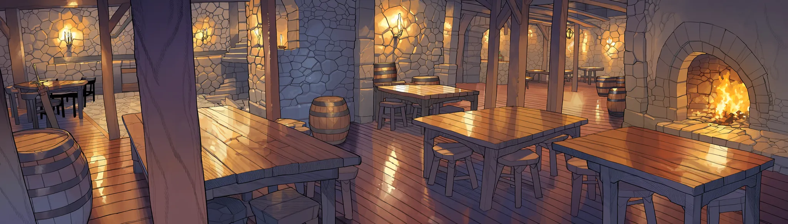

열다섯 사람
이방인 다섯에게는 포드 밖의 삶이 있다. 원주민 열은 죽으면 돌아오지 않는다. 누구와든 함께 다닐 수 있지만, 원주민은 망설인다. "넌 언젠가 안 돌아올 거잖아."
 이방인
이방인
줄리엣설지은
히든직 하나 없이, 정규 루트만으로 서버 1위에 오른 사람.
월광검사 에픽 이방인
이방인
울산강펀치마커스 리드
접속 시간은 서버 최상위인데 레벨은 41. 돈을 안 써서다.
암기사 희귀 이방인
이방인
핑뀨꽁주정세라
Lv28에 이미 2차 전직. 생산직은 레벨이 아니라 실적으로 심사받는다.
대장장이 희귀 이방인
이방인
헤리몽유하람
방송 그림이 잘 나와서 맨손으로 큰 짐승만 잡았다. 그게 직업이 됐다.
파호권사 유니크 이방인
이방인
무명최나린
잿빛 회랑에서 이방인을 거듭 쓰러뜨리는 동안, 단 한 번도 죽지 않았다.
잔영귀 전설 원주민
원주민
베른하르트 콜카르시온
제자에게 레벨보다 먼저 묻는다. "몇 번 죽었나."
 원주민
원주민
이스라잿빛 회랑
제국이 금서로 묶은 술식, 잿글을 다룰 줄 아는 단 한 사람.
 원주민
원주민
로한 델리엇리아텔
약속한 보상은 언제나, 받고 보면 조금 적다.
 원주민
원주민
가르시 렌카뎃트
죽은 원주민 단원의 이름을 하나도 빠짐없이 외운다.
 원주민
원주민
토르빈툴가르드
무기를 대하는 태도를 보고 사람을 판단한다.
 원주민
원주민
셀리아카뎃트
공짜 정보는 없다. 미소와 함께 값부터 부른다.
 원주민
원주민
유안리아텔
이방인을 동경한다. 그 이유가 "죽어도 돌아와서"라는 건 본인만 모른다.
 원주민
원주민
네이아아엘린
이방인에게 숲길을 알려 줬고, 숲은 그 책임을 그녀에게 물었다.
 원주민
원주민
카시엘할라크족
이방인을 재앙이라 부른다. 증오가 아니라, 계산 끝에 내린 결론이다.
 원주민
원주민
마르타카뎃트
퀘스트도 없고 파는 물건도 없다. 밥은 먹었냐고 물을 뿐이다.